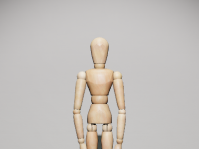
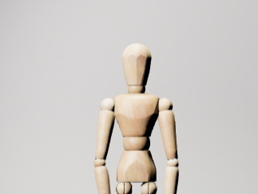
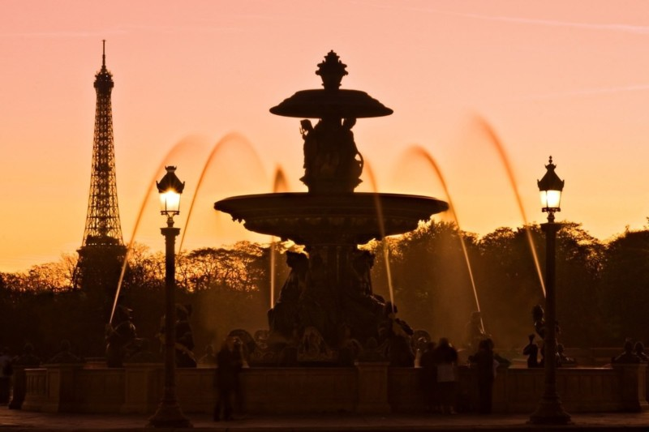
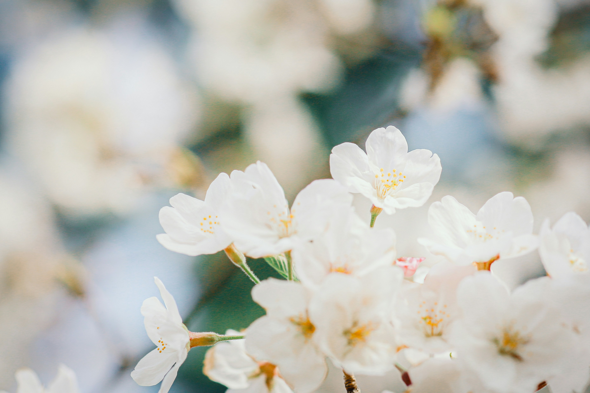
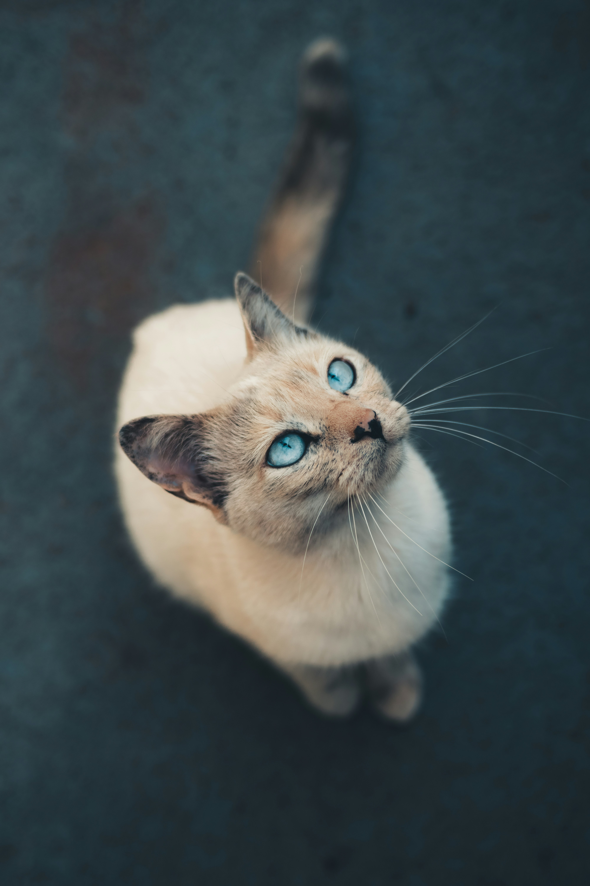
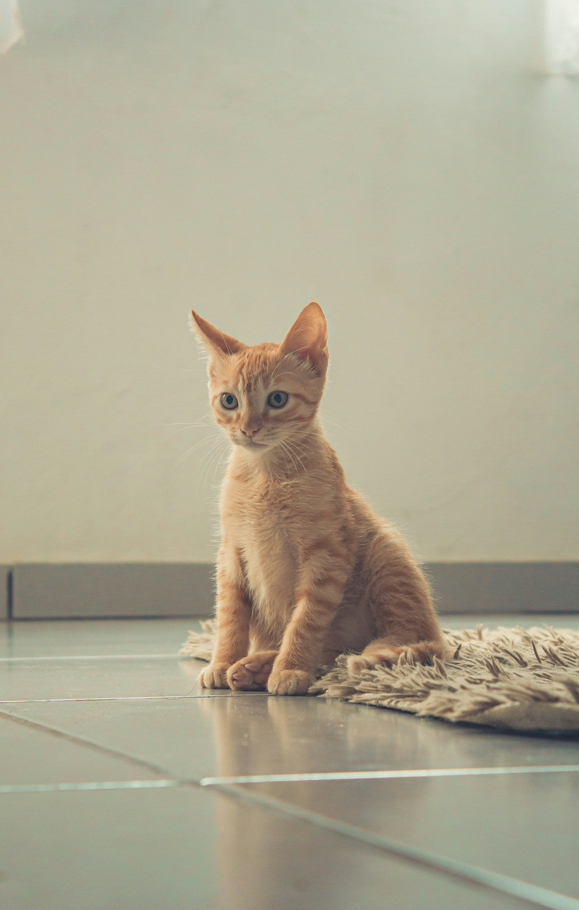
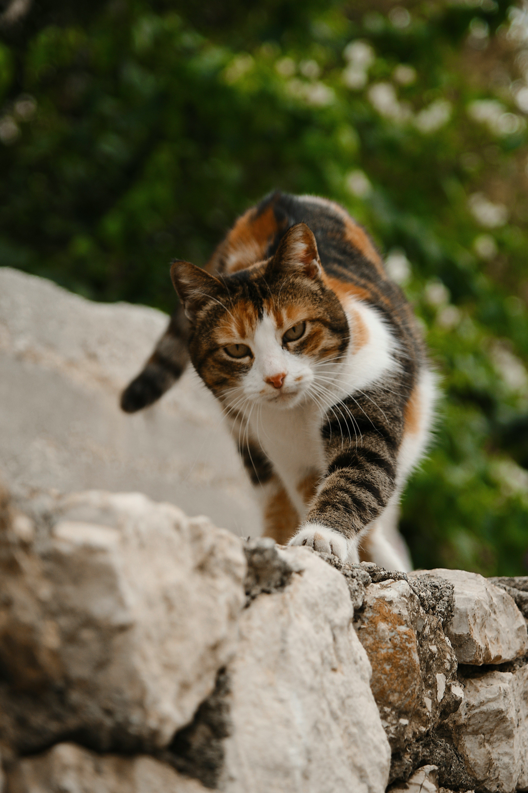

1. 구도: 사진의 뼈대 세우기
구도는 사진 속 대상들을 어떻게 배치할지 결정하는 중요한 계획입니다. 좋은 구도는 사진을 안정감 있고 흥미롭게 만들어 줍니다. 좋은 구도에는 여러 가지가 있지만, 그 중 널리 알려진 대표적인 방법을 소개합니다.
삼분할 법칙
사진의 화면을 가로와 세로로 각각 세 등분한다고 상상해 보세요. 그 선들이 만나는 네 개의 교차점이나 선 위에 중요한 대상을 배치하면, 사진이 훨씬 안정적이고 보기 좋게 느껴집니다. 이를 삼분할 법칙이라고 합니다. 삼분할 법칙은 가장 기본적이면서도 효과적인 구도입니다. 정확하게 삼등분하는 데에 집착할 필요는 없지만, 대략적으로라도 비율을 의식하며 위치를 잡는다면 더욱 좋은 사진을 얻을 수 있어요. 대부분의 스마트폰 카메라는 삼분할 가이드 기능이 있습니다. 삼분할 기능을 켠 채로 촬영하면 구도를 더 쉽게 잡을 수 있습니다.
안정적인 느낌을 주는 사진은 삼등분되는 점이나 선에 중요한 대상 혹은 경계면이 있는 경우가 많습니다.
선의 흐름으로 유도하기 (Leading Line)
사진 속에 있는 길, 울타리, 강과 같은 선을 활용하면 보는 사람의 시선을 자연스럽게 사진의 핵심 소재로 유도할 수 있습니다. 인물 사진의 경우, 선이 주인공을 향해 뻗어 나가면 사진에 원근감과 집중도를 더할 수 있습니다. 다만 이러한 선이 목이나 관절처럼 중요한 신체 부위를 가로지르지 않도록 주의하는 것이 좋습니다. 유도하는 선의 흐름이 반드시 직선이어야 하는 것은 아닙니다. 곡선도 훌륭한 조형 요소가 되어 사진에 깊이감을 더해 줍니다. 또한 지면이나 수평선, 건물의 가장자리와 같이 사진에 직선이 나타날 때에는 수직이나 수평을 맞추었을 때 사진이 더 안정적으로 보입니다.
선의 흐름은 사진을 보는 이의 시선 방향을 유도합니다. 예시 사진과 같이 발자국이나 그림자 같은 것으로도 흐름이 생겨날 수 있습니다.
선의 흐름을 통해 깊이 있는 원근감을 표현할 수 있습니다. 건물이나 수평선 등은 수직 및 수평을 맞추어 촬영하면 더욱 안정적으로 보입니다.
곡선은 사진에 부드럽고 역동적인 느낌을 더해줍니다.
시선 방향에 여백 주기
인물이 사진의 옆쪽을 바라보고 있다면, 그 시선이 향하는 방향에 더 많은 공간(여백)을 두는 것이 좋습니다. 이렇게 하면 사진이 답답해 보이지 않고, 인물이 무언가를 바라보거나 생각하는 듯한 느낌을 주어 이야기가 있는 사진처럼 보입니다. 또한 인물의 머리 위와 사진의 맨 위 사이에는 약간의 공간이 있어야 답답해 보이지 않습니다.
시선이 머무는 공간을 룩킹 룸(looking room), 머리 위 여백 공간을 헤드 룸(head room)이라고 합니다.
프레임 속 프레임
창문, 문틀, 나뭇가지 사이 등 주변의 사물을 프레임(액자)처럼 활용하여 주인공을 그 안에 담아보는 기법입니다. 이렇게 하면 보는 사람의 시선이 자연스럽게 프레임 안의 주인공에게 집중되고, 사진에 깊이감과 독특한 분위기를 더할 수 있습니다.

대칭
사진의 중앙을 기준으로 양쪽이 거울처럼 똑같거나 비슷하게 보이도록 만드는 구도입니다. 물에 비친 풍경, 건축물 등에서 대칭 구도를 쉽게 찾을 수 있습니다. 대칭 구도는 사진에 균형감, 안정감, 그리고 강렬한 인상을 줍니다.
2. 빛: 빛의 방향 활용하기
빛은 사진의 분위기를 만드는 가장 중요한 요소입니다. 빛이 어디에서 오는지에 따라 사진의 느낌이 크게 달라집니다.
순광
촬영하는 사람의 등 뒤에서 빛이 오는 '순광'은 피사체의 색과 모양을 가장 선명하고 정확하게 보여줍니다.
측광
빛이 주인공의 옆에서 비추는 '측광'은 그림자를 만들어 대상의 질감과 형태를 잘 나타내 줍니다. 사진이 더욱 입체적으로 보이게 할 수 있습니다.
역광
피사체의 뒤에서 빛이 오는 '역광'은 대상의 윤곽선을 강조하여 실루엣처럼 보이게 만들고, 신비로운 분위기를 연출합니다.
3. 초점: 원하는 곳을 선명하게
사진에서 가장 중요하게 보여주고 싶은 주인공을 정하고, 그곳에 초점을 맞춰야 합니다. 스마트폰 카메라로 촬영할 때, 화면에서 선명하게 만들고 싶은 부분을 손가락으로 가볍게 누르면 그곳에 초점이 맞춰지고 주변은 흐릿하게 표현되어 주인공이 더욱 돋보이게 됩니다.
4. 거리: 다가가고 멀어지기
주인공에게 얼마나 가까이 다가가거나 멀어지는지에 따라서도 사진의 느낌이 완전히 달라집니다.
가까이 다가가기 (클로즈업)
주인공에게 가까이 다가가서 촬영하면, 평소에 잘 보이지 않던 자세한 모습이나 표정을 생생하게 담을 수 있습니다. 주인공을 강조하고 싶을 때 효과적입니다.
멀리서 바라보기 (롱 쇼트)

주인공과 함께 주변 풍경을 넓게 담으면, 그 장소의 분위기나 전체적인 상황을 한눈에 보여줄 수 있습니다. 웅장한 풍경 속 인물을 표현할 때 좋습니다.
5. 각도: 세상을 보는 새로운 시선
항상 눈높이에서만 촬영할 필요는 없습니다. 카메라의 높낮이를 바꾸는 것만으로도 평범한 대상이 특별하게 보일 수 있습니다.
하이 앵글
위에서 아래를 내려다보며 찍는 '하이 앵글'은 대상을 더 작고 귀엽게 보이도록 만들거나, 주변 풍경을 넓게 담아 상황을 설명하는 데 효과적입니다.
눈높이 앵글
우리가 평소에 세상을 보는 시선과 같은 '눈높이 앵글'은 가장 자연스럽고 편안한 느낌을 줍니다. 인물 사진을 찍을 때 사용하면 친근함을 표현할 수 있습니다.
로우 앵글
아래에서 위를 올려다보며 찍는 '로우 앵글'은 대상을 실제보다 더 크고 웅장하며 위엄 있게 표현합니다. 하늘을 배경으로 찍으면 더욱 극적인 효과를 낼 수 있습니다.
6. 촬영 시 유의사항
좋은 사진을 찍기 위해서는 몇 가지 기억해야 할 점들이 있습니다. 아래의 사항들을 지키면 더욱 멋진 결과물을 얻을 수 있습니다.
- 카메라를 안정적으로 잡으세요: 사진이 흔들리지 않도록 두 손으로 카메라를 단단히 잡고, 숨을 잠시 멈춘 상태에서 촬영 버튼을 누르는 것이 좋습니다. 삼각대나 주변 물건을 활용하는 것도 좋아요.
- 배경을 정리하세요: 주인공만큼이나 배경도 중요해요. 찍으려는 주제를 방해하는 불필요한 물건이 배경에 나오지 않는지 확인하고, 사진을 찍기 전 주변을 정리하는 것이 좋아요.
- 인물을 촬영할 때는 허락을 구하세요: 친구나 다른 사람의 사진을 찍을 때는 반드시 먼저 상대방의 허락을 받아야 합니다.
- 여러 장을 촬영하세요: 같은 장면이라도 조금씩 다른 각도와 구도로 여러 장을 찍어 보세요. 그 중에서 가장 마음에 드는 최고의 사진을 고를 수 있어요.